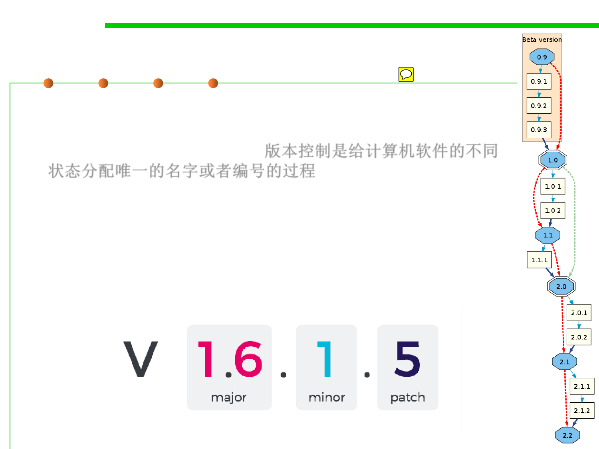

Versioning
1.1 Multi-Dimensional Views of Software Construction
▪ Software versioning is the process of assigning either
unique version names or unique version numbers to unique
states of computer software. 版本控制是给计算机软件的不同
状态分配唯一的名字或者编号的过程
– Within a given version number category (major, minor), these
numbers are generally assigned in increasing order and correspond
to new developments in the software.
– At a fine-grained level, revision control is often used for keeping
track of incrementally different versions of electronic information,
whether or not this information is computer software.